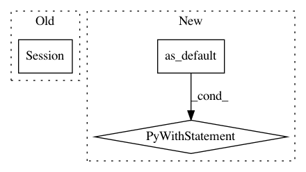

38e9391dcb5e8991a1a663601ce78bf7f08df474,tensorflow_transform/tf_utils_test.py,TFUtilsTest,test_convert_sparse_indices,#TFUtilsTest#,645
Before Change
values=[3, 2, -1, 3],
dense_shape=[4, 5])
dense = tf.constant(["a", "b", "c", "d"])
with tf.compat.v1.Session() as sess:
x, key = tf_utils._get_dense_value_key_inputs(sparse, sparse)
self.assertAllEqual(x.eval(session=sess), sparse.values)
self.assertAllEqual(key.eval(session=sess), sparse.values)
After Change
self.assertAllEqual(self.evaluate(x), sparse.values)
self.assertAllEqual(self.evaluate(key), dense)
with tf.compat.v1.Graph().as_default():
sparse1 = tf.compat.v1.sparse_placeholder(tf.int64, shape=[None, None])
sparse2 = tf.compat.v1.sparse_placeholder(tf.int64, shape=[None, None])
sparse_value1 = tf.compat.v1.SparseTensorValue(
indices=[[0, 0], [1, 1], [2, 2], [3, 1]],
values=[3, 2, -1, 3],
dense_shape=[4, 5])
sparse_value2 = tf.compat.v1.SparseTensorValue(
indices=[[0, 0], [1, 2], [2, 2], [3, 1]],
values=[3, 2, -1, 3],
dense_shape=[4, 5])
with tf.compat.v1.Session() as sess:
with self.assertRaisesRegexp(exception_cls, error_string):
sess.run(tf_utils._get_dense_value_key_inputs(sparse1, sparse2),
feed_dict={sparse1: sparse_value1, sparse2: sparse_value2})
@test_case.named_parameters(
dict(
testcase_name="dense_tensor",
key=["b", "a", "b"],
In pattern: SUPERPATTERN
Frequency: 3
Non-data size: 3
Instances
Project Name: tensorflow/transform
Commit Name: 38e9391dcb5e8991a1a663601ce78bf7f08df474
Time: 2019-10-10
Author: tf-transform-dev@google.com
File Name: tensorflow_transform/tf_utils_test.py
Class Name: TFUtilsTest
Method Name: test_convert_sparse_indices
Project Name: googledatalab/pydatalab
Commit Name: 042392f84f37ec92f97d6b73af2e5957c6d6863e
Time: 2017-05-23
Author: brandondutra@google.com
File Name: solutionbox/code_free_ml/test_mltoolbox/test_analyze_data.py
Class Name: TestGraphBuilding
Method Name: _run_graph
Project Name: dpressel/mead-baseline
Commit Name: 57591a23e73d3b2ca8132589e68c8a480f1686f5
Time: 2020-04-28
Author: dpressel@gmail.com
File Name: baseline/tf/lm/model.py
Class Name: LanguageModelBase
Method Name: load